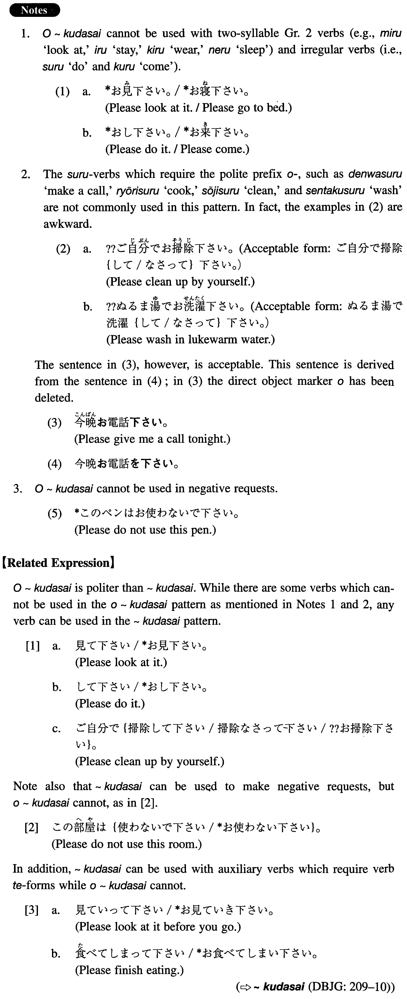

お~下さい (I. 322)
- (ksa).
- 少々お待ち下さい。
- Please wait a moment.
- (ksb).
- 電話でご注文下さい。
- Please order by phone.
- (a).
- このペンをお使い下さい。
- Please use this pen.
- (b).
- 時間があまりありませんのでお急ぎ下さい。
- Please hurry because we don't have much time.
- (c).
- どうぞお気軽にご相談下さい。
- Please feel free to consult with us.
- (d).
- 便利でお得な周遊券をご利用下さい。
- Please use excursion tickets, which are convenient and economical.
